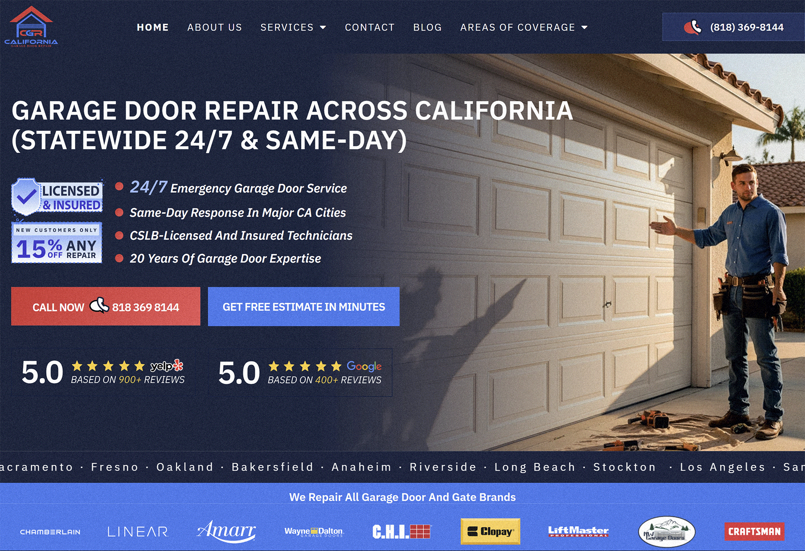
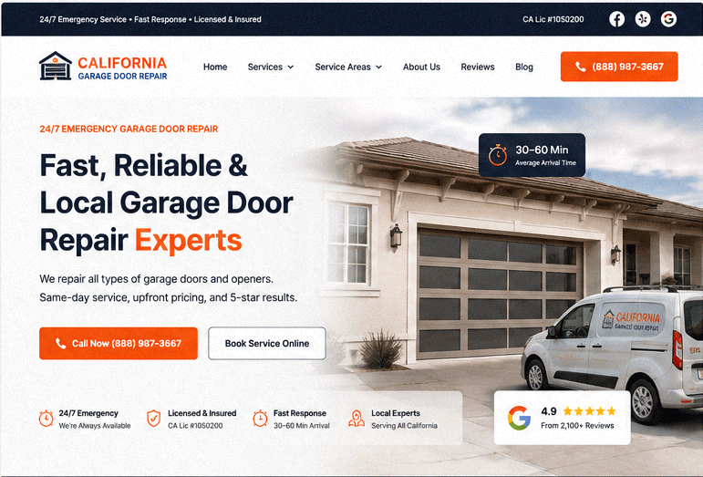
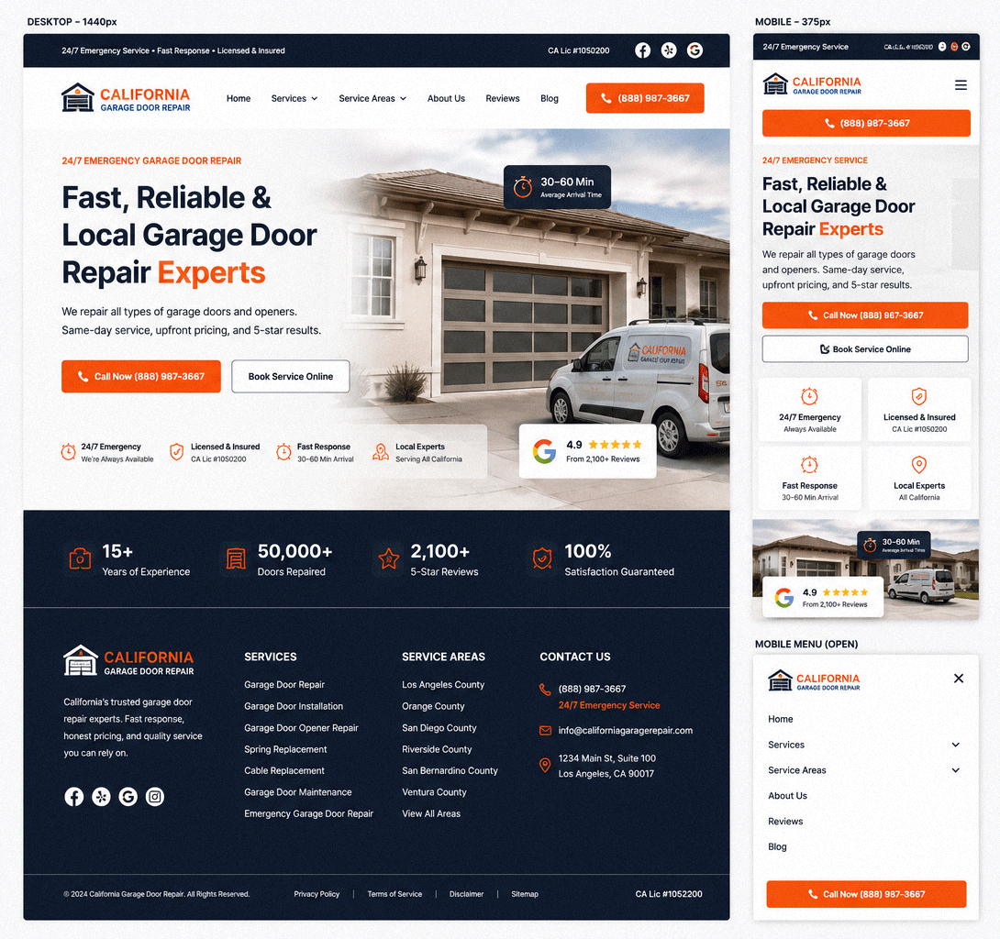

California Garage Door Repair — redesign of a conversion-optimized landing page for a local service
Role
Product / UX Designer
Task
Increase trust in the first 5 seconds, strengthen CTA, increase calls and inquiries
Context
A local garage door repair service with an outdated website and low conversion rate
Live Prototype
The final version of the landing page is available as an interactive prototype. You can view the structure, CTA logic, and behavior on mobile devices.
Before

After (Live)

Prototype Link
California Garage Door Repair — Interactive Landing
Fully responsive, conversion-optimized UI with trust layer & CTA structure
Live Prototype
Problem
The old website did not convey the value of the service and did not answer key user questions in the first few seconds: "What is this service?", "Can I trust it?", "How fast will the technician arrive?" As a result, users would leave before interacting with the CTA.
Main problems: weak visual hierarchy, lack of trust signals above the first screen, overloaded structure and non-obvious CTA.
| Zone | Problem | Impact |
|---|---|---|
| Hero | Unclear service positioning | Loss of attention in the first 3–5 seconds |
| CTA | Weak visual hierarchy of buttons | Low CTR on calls/inquiries |
| Trust | Lack of trust signals | Doubts about service reliability |
| Mobile | Overloaded structure | High bounce rate |
Solutions
1. Redesigning the Hero Section for Trust and Speed
The new first screen answers 4 questions in 3 seconds: what it is, urgency, trust, and communication method. CTA («Call Now», «Book Service») is placed in focus.
2. Implementing a Trust Layer
Added trust signals: 24/7 emergency support, licensing, fast response times, 4.9★ rating, and number of completed projects.
3. Conversion-focused CTA Structure
Enhanced visual hierarchy of buttons: the primary CTA is now the dominant element of the interface, while secondary actions are de-emphasized.
4. Mobile-first Simplification
Cognitive overload removed: shortened navbar, left one main scenario — call.
5. AI-ready structure
The interface is designed as a set of modular blocks, ready for generation through v0 / Claude Code / React.
UI Presentation
Responsive Layout System
The landing page was redesigned with a modern conversion-focused structure, emphasizing trust, clarity, and mobile-first usability while keeping the original brand direction and service-business positioning.

🎨 Design System
Colors
Typography
Primary Font
Inter (Google Fonts)
H1
48–56px
H2
32–40px
Body
16–18px
🧩 Components
The interface was structured using reusable UI blocks to simplify future scaling and AI-assisted code generation workflows.
CTA Buttons
Primary and secondary actions optimized for conversions.
Trust Badges
Visual credibility layer with licensing and response indicators.
Service & Metrics Cards
Modular content blocks designed for scalability and responsiveness.
Structured Footer System
SEO-friendly navigation and service-area organization.
Expected Impact
+60% CTR
on main CTA (Call / Book Service)
+40% trust
due to the trust layer above the first screen
-30% bounce rate
on mobile devices
Summary
This is not just a visual redesign, but a structural overhaul of the landing page for conversion. The main focus is trust, understanding speed, and maximum simplification of the path to action.